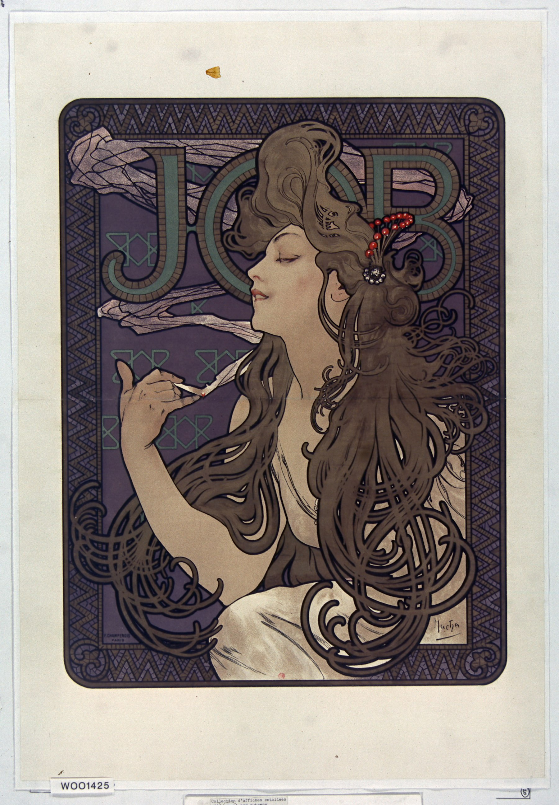

The night before Christmas 1894, a Paris print shop was short-staffed and scrambling to finish a poster for Sarah Bernhardt's new play, Gismonda. The illustrator who got pulled in to cover the job was an almost-unknown Czech artist named Alphonse Mucha. The poster went up on the streets of Paris, and within a day Bernhardt had sent for him and signed him to a six-year contract. Two years later, the cigarette-paper company JOB came calling for a poster of their own — the name itself was an accident of branding: founder Jean Bardou had simply printed his initials, J and B, split by a small diamond, on his paper packets, and Parisians read the whole thing as one word, "JOB." What Mucha handed back became, alongside its 1898 companion piece, one of the most reproduced, pirated, and physically stolen-off-the-wall posters of his career.
There's almost no negative space left in this frame. The woman's head tilts back, eyes half-closed, a thread of grey-blue smoke rising from the cigarette between her fingers and curling up through her hair until it tangles into the giant letters spelling JOB behind her — at some point you can no longer tell where the hair ends, the smoke begins, or the lettering takes over. This is the trick Mucha had already worked out with Gismonda: never give the product name its own clean, isolated space. Fold it into the same decorative curve-language as the figure and the pattern around her.
Your eye ends up tracing a slow loop — fingers to hair to smoke to letterform — instead of reading the poster in one glance the way most advertising asks you to.
The ground is a heavy, muted grape-violet, framed by a zigzag mosaic border in bronze-gold and slate blue-grey — a device Mucha lifted from Byzantine mosaic work, the same trick he'd used on Gismonda, reserved for commissions he wanted to feel weightier than an ordinary street ad. The letters spelling JOB sit in a muted olive-teal, close enough to the violet background to stay quiet.
What actually pulls your eye first isn't her face — it's the single cluster of vermilion-red berries pinned in her hair, the one saturated warm note in an otherwise hushed, tonal palette, placed almost dead-center near the top of the frame.
This is a color lithograph, printed by Ferdinand Champenois, Mucha's regular Paris publisher — a process that requires cutting and registering a separate stone for every color, so the more hues in the print, the harder it is to pull off cleanly. Nearly all of Mucha's best-known Paris posters came off Champenois's presses. Every shape here is flat color bounded by a dark contour line — hair, smoke, and pattern all separated the same way — a technique lifted from the ukiyo-e woodblock prints that had just reached Paris, and one Toulouse-Lautrec was using at the same moment.
The hair itself resolves into coiling, whip-like curls — what French critics called the coup de fouet, the "whiplash line" — which went on to become the single most recognizable visual signature of Art Nouveau as a whole.
Most commercial posters in the 1890s just printed the product name and price as boldly as possible. Mucha does close to the opposite: the JOB brand name is woven into the decorative pattern so thoroughly you could miss it on a first look, while the actual subject of the poster is a woman mid-exhale, eyes half-shut, seemingly lost in her own thought rather than selling you anything. He's selling a mood — languid, private, faintly luxurious — before he's selling rolling papers.
That's an advertising move that still holds up today, and in 1896 it was close to an invention. The posters were popular enough that collectors and passersby would tear them straight off walls before the paste had even dried, which says plenty about how far this image had already traveled beyond "advertisement."
Alphonse Mucha (1860–1939) was born in Moravia, in what's now the Czech Republic. Filling in for a colleague just before Christmas 1894, he produced the Gismonda poster for Sarah Bernhardt almost by accident, and went from unknown to the most in-demand poster artist in Paris within a day — he stayed her house designer for six years while also taking on a flood of commercial work: cigarette papers, beer, bicycles, perfume. The look became known simply as "Le Style Mucha," and later generations largely came to treat it as shorthand for Art Nouveau itself.
The JOB commission came from the Bardou family, who funded artists to promote the brand from 1895 onward; Mucha's two posters for them — this 1896 version and a larger 1898 companion — remain among his most collected works today. Late in life, Mucha set commercial work aside and spent nearly twenty years on The Slav Epic, twenty monumental canvases he considered his real legacy, rather than the posters that made him famous. This work is in the public domain; image via Wikimedia Commons.